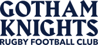

Gotham Knights
var(--font-wordmark) · Harbour Bold · UPPERCASE · letter-spacing var(--tracking-wordmark)

official mark
(tracking target)
Use Harbour for
- The words “Gotham Knights” in logo / title form
- The wordmark lockup beside the crest
- Always UPPERCASE, always tight tracking
Don't use Harbour for
- Headings → Hanken 800 (
--font-heading)
- Loud moments → GothamHTF (
--font-athletic)
- Body, quotes, or any text that isn't the name